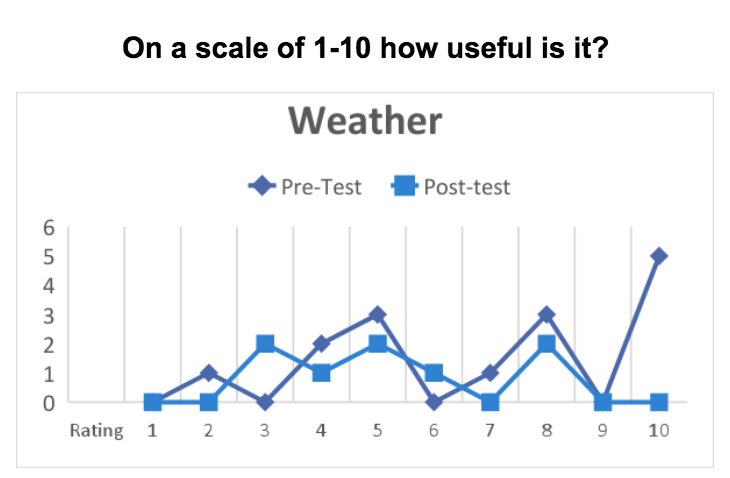
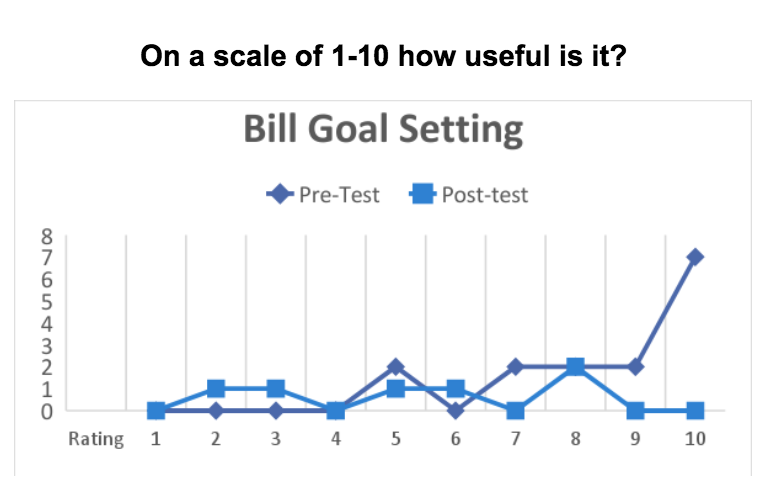
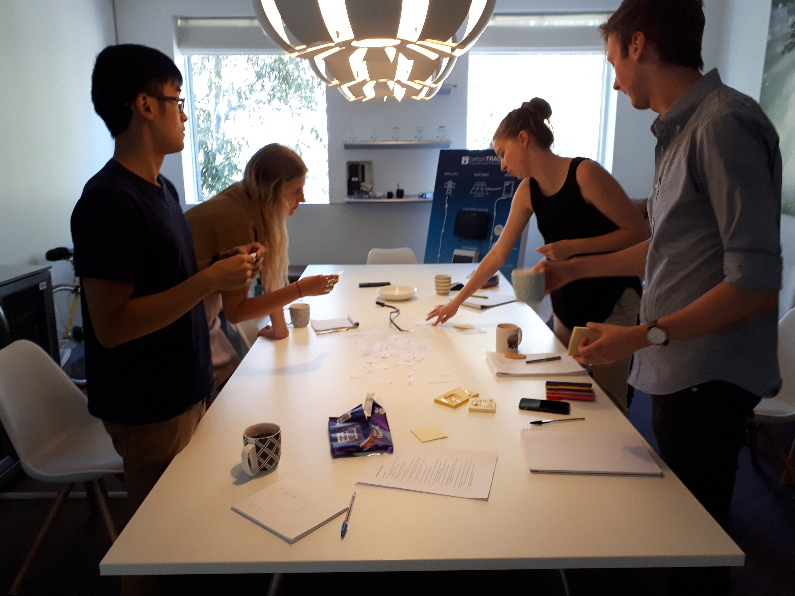
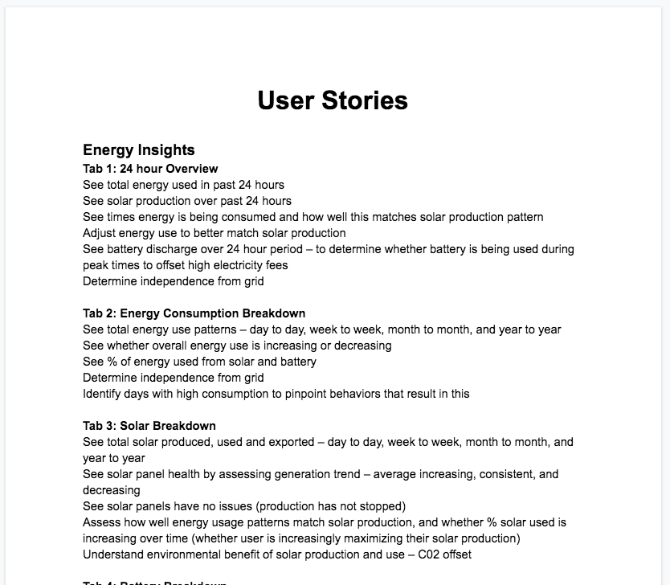
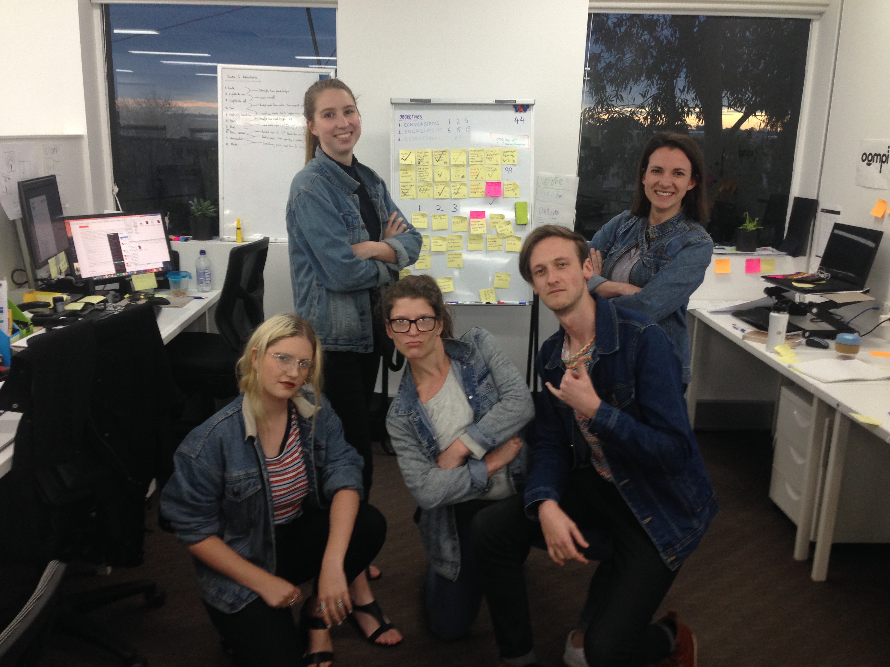

Overview
While working at carbonTRACK as their Marketing and UX Manager, I worked with my team to complete several iterations of design improvements for the app, one of carbonTRACK’s main products.
The carbonTRACK app connects users with their carbonTRACK monitoring system, a hardware device that is connected to their mains and/or solar power and monitors and controls these connections. It allows users to see how much solar their are generating, using and exporting to the grid. It also allows them to monitor their electricity consumption, and switch on and off mains switches (for example pool pumps and air conditioners).
The app and web-based dashboard is carbonTRACK’s main tool for engaging and interacting with their end users. Thus, it is very important that carbonTRACK continue to improve their users’ experience while using the app.
Techniques Used
- Design Research
- Information Architecture Design
- User-Flow Mapping
- User Personas
- Structured Surveys
- Semi-Structured Interviews
- User Stories
- Prototyping
- Testing & Collecting User Feedback
Iteration One: Bill Tracking and Weather Feature
Our first challenge was to beta test a new weather and bill monitoring feature for the app. The concept was that solar owners could check the weather, then decide whether to turn on (or off) appliances in their home. For example, on a rainy day they could choose not to run the pool pump, and on a sunny day they could do the washing. The bill monitoring concept allowed them to keep an eye on how their electricity bill was shaping up.
The feature was ready to launch when I joined the company, and so my role was in leading the beta test. Here’s how it went:
The Process
TESTING
Beta testers were selected based on their engagement with the app. A range of participants were selected, from those who logged in daily, to those who had not logged in since their system was installed. Fifteen end users in total participated as part of the feature trial.
Our team spoke to each of these participants via phone to first gain their consent to participate and be interviewed. Following this, we designed and conducted an initial interview was conducted to gain an understanding of and empathy with the current challenges and benefits they had experienced using the app. In the interview, the new features were introduced and participants shared their assumptions on how useful they thought the feature would be and why. We could use the information collected from this initial round of interviews in later iterations of the app’s development too.
How to use the features was not explained so as to determine their unaided usability. However, over the one month period of the trial, three emails were sent to the participants with instructions on how to use different aspects of the features to support their adoption and engagement.
Utilising the information collected in this interview, our team hypothesised how the users might respond to the new features, and how useful they would find them.
- End Users would like a monetary translation of their energy information on their dashboard
- End Users will find the weather feature useful for scheduling their appliances to use their solar
- End Users will find the current bill comparison display confusing
- The current platform is not simple and easy enough to understand for some end users
At the end of the month’s trial, a second round of interviews were conducted. This time, the focus was on how the users found the features.
FEEDBACK COLLECTED
Weather feature
In the pre-test survey, about 70% of users thought this feature might be useful. Only a few made the immediate connection between changing the appliances they use to match the weather. One person recognized that it would be highly useful if the system automatically adjusted the amount of power you were using (by switching appliances on or off) to compensate for weathers (and therefore solar generation) changes.
Recommendation
If carbonTRACK introduces intelligent switching, this will have to be carefully explained and implemented with end users to ensure they understand and agree to its application in their household or business.
In the post-test survey, far less users found the feature useful. Results indicated that the weather feature, at least in its current format, is not highly useful to end users. See chart below for usefulness ratings.
We considered the possible reasons for why users did not engage with this feature. We thought that perhaps either they did not have the time to tailor their switching to best suit the weather; and/or that they did not understand how to tailor their switching to best suit the weather.
Recommendations
Keep the weather feature as a part of the interface and send clear tips with user actions on how to improve energy savings by checking the weather.
Possible feature improvements
Include an option to display weather alongside electricity usage and solar generation data to show users the correlations (e.g. higher bill when the weather has been bad); and introduce intelligent switching based on weather and solar production.
Bill tracking feature
Most users (about 85%) saw this as a highly useful feature in the pre-test survey. They saw it as a way to predict how their bill is shaping up, and to try to reduce their bills. Interestingly, in the post-test survey, a significant number of users (about 50%) either indicated that they wouldn’t really use it or didn’t attempt to use it, and the usefulness rating dropped considerably (see chart below). Several users said that they would like the dashboard to show a bill prediction. This demonstrates that they did not understand the bill data presented.
Post-test results indicated that users are interested in a feature that monetizes their energy data in some way, but that the feature solution created does not meet their expectations.
Possible reasons
- Users did not understand the data in the way it is currently presented
- The data was not useful to users in the way it was presented (see suggestions in survey responses)
- Users need different information to the information provided for it to be useful (see suggestions in survey responses)
Recommendations
The location to enter bill details should be more intuitive; change display format of bill prediction information; need to ensure form to enter bill details matches format for different users (one user said they could not use it as is because they have a multi-phase system).
Possible feature improvements
Add option to incorporate bill details into reports; Incluse option to alter bill prediction time (e.g. quarterly, bi-monthly etc.) to match the regularity of bills from energy providers.
Summary of Iteration One Recommendations
- The carbonTRACK Dashboard should be optimized for mobile and iPad use, as this is a very popular way to engage with carbonTRACK. Overall functionality and usability needs to be improved.
- Weather: Needs more purpose than simply showing the user the weather. Possible uses: show on ‘Day Summary’ so users can see why they may have produced less solar on a particular day; apply to automation of intelligent / hierarchical switching.
- Bill Goals: The location to enter bill details should be more intuitive. Change display format of bill prediction information. Need to ensure form to enter bill details matches system setup for different users (one user said they could not use it as is because they have a multi-phase electricity system).
Iteration Two: Complete Redesign
Our next challenge was to take on board the learnings from the completed beta test, as well as additional product design research, and redesign the information architecture, layout, look and feel of the entire app. This project took about a year from initial approval to deployment to the entire user base.
The Process
We began by using the information we had collected in the beta test to springboard extensive research into other products on the market. We looked at a broad range of products, from direct competitors, to anything broadly related to energy, money and smart homes. We even extended our research to apps that we knew provided a good user experience, for example Spotify, Facebook and the Commbank app.
This exploratory research would help us identify best practices, incorporate common design trends that that our users would likely understand quickly, and inspire our design work.
Following the research phase, the team did a massive brainstorm of all the possible features our new app could have, including all of the features of the current app, as well as many creative ideas inspired by our research.
We then revisited our user feedback to identify the key areas the app already met, or needed to be adjusted to meet the core needs of our users. We used these insights to narrow down our starting point and form a list of user stories to guide our designs.
From there, we mapped out the information architecture then began wireframing the layout of the app on our team whiteboard. There were many rounds of feedback and adjustments of the wireframes. The head of Engineering shared feedback on what was feasible in the initial MVP, and also sometimes had strong opinions about how things should laid out.


This was a big challenge for our team, as we sometimes felt that our carefully researched design decisions were overridden and that some of the UX issues from the old app would be brought into the new. We did our best to discuss the designs thoroughly and understand the perspective of our senior colleague. We managed to negotiate to a final set of wireframes that everyone was mostly happy with.
Next in our process was to create some high fidelity mockups of our vision to share and begin testing with end users.
Once the designs were complete, we put them into an InVision project and added user interaction functionality so that we could do some user testing and collect feedback. In the round of testing followed where we performed a number of semi-structured interviews and gave testers tasks to complete, based off our key user stories. We gained some excellent insights that allowed us to adjust different aspects of our designs.
We then did a second round of interviews, getting a different set of users to perform the same tasks as the first round. The changes necessary were significantly fewer after this round of interviews. So, after tweaking the designs, we shared them with the engineering team in an open forum discussion. This allowed the engineers who would build the new app the opportunity to ask questions about any aspects of the design. Both the engineering team and the UX team found this very useful, so we continued to hold these discussions for the duration of the build.
While the app was being built, our team made a plan for how to support our end users with the transition to the new app, and to ensure their learning curve was as small and surmountable as possible. We crafted a pre-launch series of emails that forewarned users that change was around the corner, and a post-launch series containing simple instructions on how to use the app, and created a number of tutorial videos for our users to access.
The final product and the tutorials we made to support users
We also ran a number of training workshops with the customer service team to educate them how to use all of the features of the new app, and how to show end users what to do in order to get more benefits from the product.
Finally, several months later, the MVP of the new app was ready to ship! Everyone was very excited (naturally) and the team felt as prepared as we could be to make the transition smoothly. On the day of the launch, we only received three phone calls from customers who needed help with their new app. Our team saw this as a huge success!
